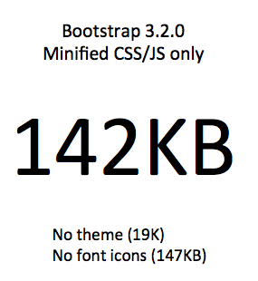

Don't Get Bootstrapped
Down
Reading the Fine Print on Responsive Frameworks
A quick history lesson…
We couldn't even use the computer while we were in the bathroom.
To paraphrase Jeremy Keith:
The web has always been responsive…right up until developers and designers came along and broke it.
The web was "broken" for a really long time.
Almost every website in 2005:
.container {
width: 960px;
}A funny thing happened in 2007…

…and then again in 2010…
It's easy to forget how far we've come
It's easy to forget how far we've come
- Being able to display a full desktop website on a smartphone was revolutionary.
- Pinch, zoom and double-tap were considered features, not annoyances.
Most sites went one of two directions:
- They did nothing.
- They built a separate mobile site, and routed traffic using device or user agent sniffing (yuck).
Something else happened in 2010…
- "Responsive Web Design"
- Coined by Ethan Marcotte in an A List Apart article
- Publish date: May 25, 2010…nearly three years after the release of the iPhone.
This one article changed everything.
Marcotte's ideas flipped UI development on its ear:
- "One codebase to rule them all"
- Fluid grids based on proportionate sizes and relative units
- Flexible images
- Media queries to detect and respond to the device’s viewport dimensions
- Also brought more prominence to the concepts of "mobile first" and progressive enhancement
In other words, even with smartphones IN THEIR HANDS, it took developers three years to go from this:
.container {
width: 960px;
}To this:
.container {
max-width: 960px;
}People. Freaked. Out.

Developers scrambled to learn this major paradigm shift in development
Suddenly, everyone wanted a responsive site
Responsive solved a lot of problems, but it also introduced a whole bunch of new ones:
- There's a learning curve.
- It's impossible to test for all variations of screen sizes, devices and operating systems.
- How do we design for it?
- It (arguably) takes more development time.
- Performance takes a front seat.
Enter the responsive frameworks
Enter the responsive frameworks
- Bootstrap:
- Originally called Twitter Blueprint, then Twitter Bootstrap, and finally, just Bootstrap.
- Open source. Built on LESS (SASS fork available).
- Built by Twitter employees Mark Otto and Jacob Thornton as a framework to encourage consistency across internal tools.
- "We saw ourselves build something much more substantial than another internal tool. Months later, we ended up with an early version of Bootstrap as a way to document and share common design patterns and assets within the company." - Mark Otto
What does a framework really do well?
- Lowers the barrier for entry into the world of responsive design.
- Allows for rapid prototyping.
- Creates a consistent design language and coding style.
- Establishes a responsive grid.
- Provides a consistent set of stylized components and design patterns (buttons, lists, tabs, forms, media blocks, etc.) based on that grid.
- Includes all necessary JavaScript to make the components actually work.
From our list of problems caused by responsive design…
- ☑ There's a learning curve.
- ☑ It's impossible to test for all variations of screen sizes, devices and operating systems.
- ☑ How do we design for it?
- ☑ It (arguably) takes more development time.
- ☐ Performance takes a front seat.
OMG frameworks have everything!!!

We should use them for every site ever!!!
Yeah…don't.
- Before you decide to use a responsive framework, ask yourself two questions:
- Does the value it provides outweigh its potential pitfalls?
- Am I asking my end users to shoulder the burden of conveniences during development?
- If I can't talk you out of using frameworks on production sites entirely, I hope I can at least show you how to use them differently.
Attack of the Clones
Attack of the Clones
Attack of the Clones
Attack of the Clones
"Creates a consistent design language and coding style."

Attack of the Clones
"Creates a consistent design language and coding style."

Attack of the Clones
"Creates a consistent design language and coding style."

Attack of the Clones
"Creates a consistent design language and coding style."
Attack of the Clones
"Creates a consistent design language and coding style."

Attack of the Clones
"Creates a consistent design language and coding style."

Attack of the Clones
"Creates a consistent design language and coding style."
Attack of the Clones
"Creates a consistent design language and coding style."
Maybe a little too consistent?
Attack of the Clones
What to do differently:
- Try to customize the built-in components as much as possible to avoid looking like every other Bootstrap site on the planet.
The Right Tool for the job
The Right Tool for the job
Choose one. Only one.
The Right Tool for the job

The Right Tool for the job

The Right Tool for the job
- Certain tools are better for certain situations than others.
- A tool that can do everything pretty well isn't always better than a tool that can do one thing really well.
The Right Tool for the job

The Right Tool for the job
The Right Tool for the job
What to do differently:
- A framework shouldn't be a dependency for every project. Evaluate if it's really needed first.
- If you do find a framework to be appropriate, establish a baseline of components you plan to use.
- If possible, strip out or conditionally load the CSS and JS for unused components.
Performance is King
Performance is King
- Walmart: Sharp decline in conversion rate as average site load time increases from 1 to 4 seconds.
- Walmart: Every 1 second shaved off load time increased conversions by 2%. Incremental revenue went up 1% with every 100ms decrease.
- Amazon: 1% decrease in revenue for every 100ms added to page load.
- Etsy: 160k increase = 12% increase in mobile bounce rate.
- Google: Shoppers expect pages to load in seconds or less. At 3 seconds a large share abandon.
“250 milliseconds, either slower or faster, is the magic number for competitive advantage on the Web”
Microsoft
Performance is King
Performance is King
A sample performance budget:
Dan Mall, "How to Make a Performance Budget"
Performance is King
A sample performance budget:
Dan Mall, "How to Make a Performance Budget"
Performance is King
What to do differently:
- Minify, uglify, concatenate. Oh my!
- Strip out unused tools from the SASS/LESS and recompile. There's no reason to load code you're not using.
- Learn about and use performance budgets, and educate your organization and stakeholders about why they're important.
Choose Your Framework Like You'd Choose Your Spouse
Choose Your Framework Like You'd Choose Your Spouse
Choose Your Framework Like You'd Choose Your Spouse

Choose Your Framework Like You'd Choose Your Spouse

Choose Your Framework Like You'd Choose Your Spouse
Perhaps more importantly, what happens when your framework itself is refactored?
Choose Your Framework Like You'd Choose Your Spouse
Bootstrap 1/2:
<div class="row">
<div class="span4">...</div>
<div class="span8">...</div>
</div>Choose Your Framework Like You'd Choose Your Spouse
Bootstrap 3:
<div class="row">
<div class="col-xs-6 col-md-4">...</div>
<div class="col-xs-12 col-sm-6 col-md-8">...</div>
</div>"Bootstrap Bankruptcy"
"The point at which the value gained from the custom interface is less than the effort required to refactor Bootstrap and implement the new interface." - Matthew Copeland
Choose Your Framework Like You'd Choose Your Spouse
What to do differently:
- If you're using a preprocessor like SASS or LESS, consider extending Bootstrap, rather than using its provided classes.
Choose Your Framework Like You'd Choose Your Spouse
What to do differently:
Choose Your Framework Like You'd Choose Your Spouse
What to do differently:
- If you're using a preprocessor like SASS or LESS, consider extending Bootstrap, rather than using its provided classes.
- This keeps your classes more semantic and human-readable, and you're not quite as locked into the framework if things go wrong.
To summarize…
- Responsive design has come a long way in the last five years, and frameworks are a natural result of this tectonic shift.
- CSS frameworks have their advantages, especially for prototyping, or in large organizations and projects.
- That said, they're also potentially problematic on production sites.
- Avoid frameworks if you can.
- If you must use them, be aware of and work around their shortcomings.
Remember:
- Does the value a framework provides outweigh its potential pitfalls?
- Am I asking my end users to shoulder the burden of conveniences during development?